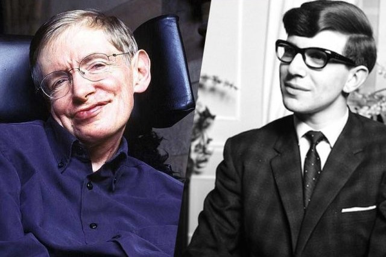

Stephen W. Hawking

Âge : 71 ans QI : 160
Hawking est célèbre pour ses recherches révolutionnaires en physique théorique, et est l’auteur de plusieurs livres qui nous aident à mieux comprendre l’univers. Avec sept best-sellers et 14 prix, Hawking est un scientifique consacré même atteint d’une maladie dégénérative (sclérose latérale amyotrophique).